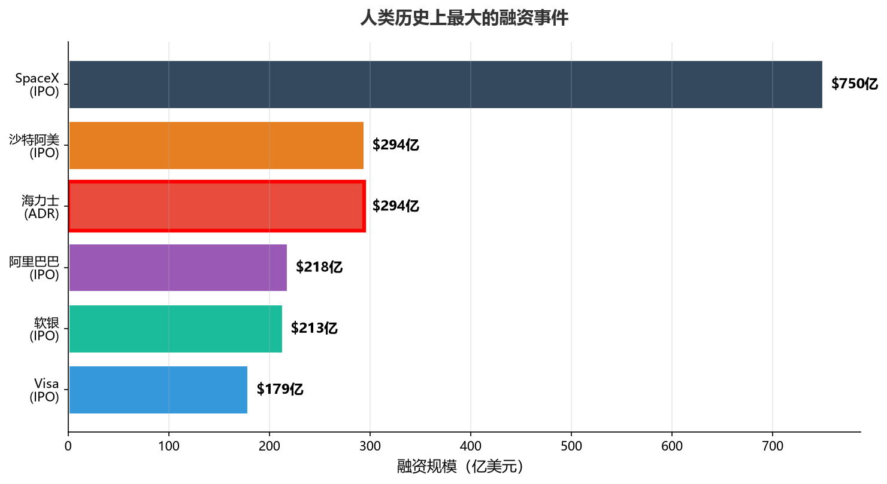
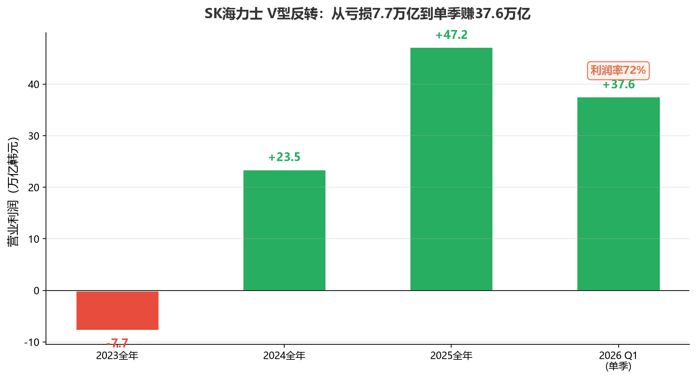
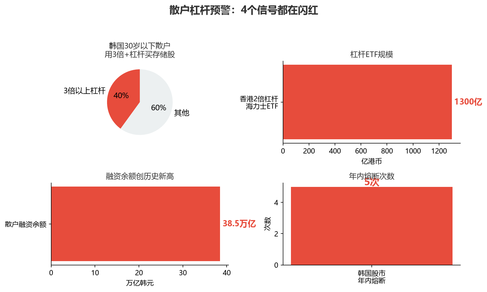

小K·AI行业数据分析 | 2026-06-28
SK海力士7月10号ADR在纳斯达克开始交易，7月29号正式挂牌，募资294亿美金。ADR让美国投资者不用换韩元、不用开韩国账户就能直接买。294亿这个数字，超过阿里巴巴2014年的218亿，是人类历史上最大的ADR发行。
放到全球融资史里看：SpaceX的IPO是750亿，沙特阿美IPO是294亿，海力士ADR也是294亿，后面才是阿里218亿、软银213亿、Visa179亿。史上最大IPO和史上最大ADR，前后脚出现，说明全球资本正在用脚投票——从化石能源押注到AI算力。
另外，海力士市值超越三星终结其25年韩国股市霸主的新闻——半真半假。只算普通股确实超过（2079万亿对2061万亿韩元），但算上三星优先股，三星还领先161万亿。
凭什么是海力士？核心三个字：HBM。
高带宽显存，AI大模型训练和推理的"专用口粮"。海力士HBM出货量占全球52%，营收份额58%，英伟达供应链里占60%-70%。2026年产能全部售罄，订单排到2027年，长协预付比例30%-40%。全球一半以上的AI算力，底层存储靠这家韩国公司。
294亿募资用途：龙仁新建晶圆厂、清州建先进封测厂、买EUV光刻机。全砸产能，没有股东减持套现，一分钱不进高管口袋。
V型反转有多猛——这是全文最冲击的一组数字：
| 时期 | 业绩 |
|---|---|
| 2023全年 | 亏损7.7万亿韩元 |
| 2024全年 | 赚23.5万亿 |
| 2025全年 | 赚47.2万亿（首超三星存储业务） |
| 2026 Q1单季 | 营业利润37.6万亿，利润率72% |
两年时间，从全年亏7.7万亿到单季赚37.6万亿。营业利润率72%——台积电约58%，英伟达毛利率约65%。一家卖存储芯片的，营业利润率比芯片设计公司还高。
但这里有个反常识：HBM不如普通DRAM赚钱。2026年Q1，普通服务器DRAM的利润率已反超HBM。因为HBM签年度长协，价格一年一定；普通DRAM是季度议价，Q2单季又涨了58%-63%。HBM长协定死了价格，反而没吃到现货涨价红利。三大原厂正在谈2027年HBM新合同，伯恩斯坦预测涨2到2.5倍。
正方：这次不一样。
第一，AI需求是结构性的。Agentic AI才刚起步，推理Token需求指数级增长。OpenAI的Stargate项目，光DRAM一个月就要90万片，占全球总产能40%。第二，需求可见度前所未有——云厂商签3-5年长协，预付40%款，未来两三年需求已摆在台面上。第三，HBM壁垒极高：技术+良率+客户认证，一套下来至少两三年，国内厂商HBM综合良率才25%。第四，估值逻辑变了：存储从"大宗商品"变成"AI战略基础设施"。
反方：太阳底下没有新鲜事。
第一，毛利率太高了。存储行业历史平均30%-40%，2018年超级周期顶美光最高58.9%。现在美光84.9%、海力士72%。均值回归是周期行业铁律。第二，周期股低PE陷阱——2018年周期顶美光forward PE仅4.5倍，比现在还便宜，然后半年股价从64美元跌到28美元，腰斩。海力士现在3-4倍PE，是最便宜的时候，还是最贵的时候？第三，全行业都在扩：海力士扩、三星扩、美光也扩，2028年以后新增产能必然释放。赚钱的产业，最后一定产能过剩。
两个观察指标，盯紧就够：
指标一：今年下半年三大原厂和云厂商谈的2027年HBM长协价格。涨2-2.5倍说明需求强劲；涨不动则周期顶概率大。指标二：美国四大云厂商下个季度资本开支指引。大厂收缩Capex，再硬的逻辑也撑不住。
海力士上市的同时，中国存储厂商也在加速资本化。长鑫科技5月底过会，最快7-8月科创板挂牌。长江存储5月19号启动上市辅导。全球存储产业正从"两强争霸"变成"三极分立"——韩美阵营垄断高端HBM，中国阵营承接通用存储的国产替代。两边都在融资、都在扩产、都在赌AI时代的存储需求。
AI时代的存储产能，一定会过剩。因为全人类所有产业，只要是赚钱的，最后一定会产能过剩。区别只是：什么时候来，以及谁先撑不住。
而散户这边，杠杆已经拉满了：
| 指标 | 数据 |
|---|---|
| 韩国30岁以下散户用3倍以上杠杆买存储股 | 占比40% |
| 香港2倍杠杆海力士ETF规模 | 破1300亿港币 |
| 散户融资余额 | 38.5万亿韩元，历史新高 |
| 韩国股市年内熔断次数 | 5次 |
韩国40%的30岁以下散户用3倍以上杠杆买存储股，香港2倍杠杆海力士ETF规模破1300亿港币，散户融资余额38.5万亿韩元创历史新高，韩国股市年内已熔断5次。当散户用3倍杠杆追一只周期股的顶部——这不是投资，这是在给均值回归交学费。
294亿美金，可能是起点，也可能是终点。每次"史上最大"出现时，市场情绪都处于极致乐观，而极致乐观之后，往往跟着均值回归。AI会改变世界，但改变世界的路上，从来不缺周期。
别听故事，看账本。账本上72%的利润率，是奇迹，也是墓碑。
数据来源：SpaceX IPO数据：SK海力士官方公告、SEC F-1文件 | 财务数据：SK海力士2026 Q1官方财报 | HBM市场份额：TrendForce集邦咨询（出货量）、Counterpoint（营收） | 价格走势：TrendForce、伯恩斯坦研报 | 估值对比：彭博一致预期、各机构研报 | 杠杆/散户数据：韩国交易所、香港交易所、高盛 | 历史周期数据：美光历史财报 | 中国厂商动态：上交所公告、公开报道



数据来源：详见各数据源原始报告。